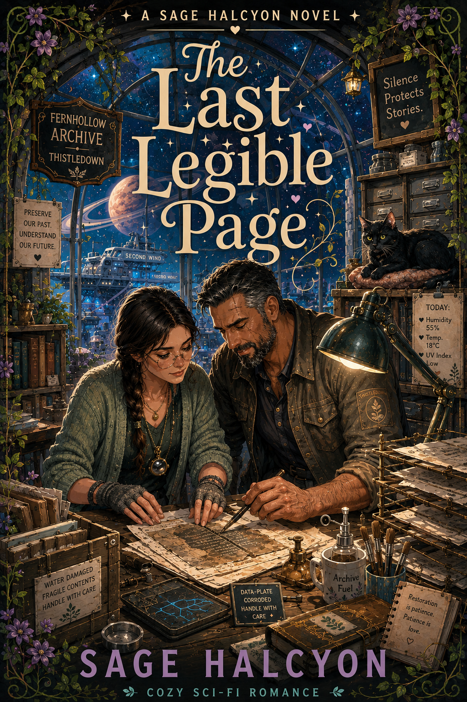

Archivist tenderness
Water-damaged records, patient restoration, guarded people learning to trust the page again, and a cat who does not rush the process.
Thistledown · Book 4
A cozy sci-fi romance about archives, salvage, guarded hearts, one very slow restoration project, and a cat named Midnight taking his sweet time coming around.

Sable Larkin has spent a decade convinced that books do not lie the way people do. She runs Thistledown's archive alone, on purpose, and she is fine with that.
Then salvage hauler Rook Cassidy shows up with a water-damaged crate he does not know what to do with, and suddenly she has a slow, patient restoration project on her hands and a man who will not stop standing near the door like he is ready to leave.
Rook has been running solo ever since a partner he trusted rewrote their whole history and left him holding the blame with no record to prove otherwise. Paperwork is not safety to him. It is the thing that failed him.
As they work through the crate page by page, data-plate by data-plate, something in both of them starts to thaw, right along with Sable's guarded cat Midnight. But buried in the crate is a find worth real money offworld, and old habits die hard.
Rook could take it and go, the way he always has. Or he could tell Sable the truth, all of it, and stay.
Water-damaged records, patient restoration, guarded people learning to trust the page again, and a cat who does not rush the process.
The Last Legible Page stands alone, but it follows Keeping it Warm in the Thistledown release order.